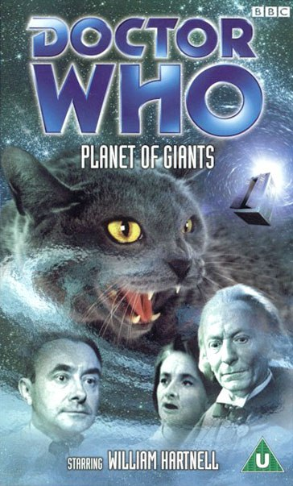
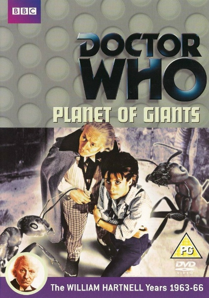
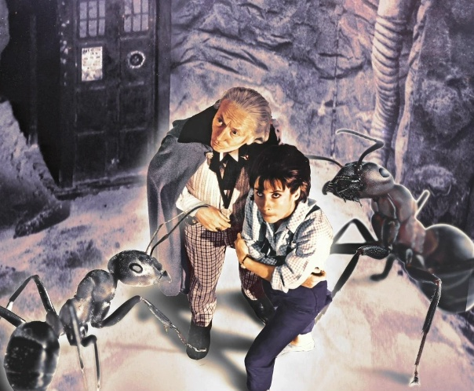

Эра Первого Доктора (2 сезон)
<<< НАЗАД ||| 1. Планета гигантов ||| ДАЛЬШЕ >>>
Субтитры: Русские и Английские |  |
|---|---|
+ Расширенная реконструкция (эпизоды 3, 4) 2012 или Original (ENG) Субтитры: Русские и Английские | |
+ Фанатская AI-реконструкция (эпизоды 3, 4) Йен Ливайн или Original (ENG) Субтитры: Русские и Английские | |
31 октября - 14 ноября 1964
3 эпизода по 25 мин.
| 1. Планета гигантов 2. Опасное путешествие 3. Кризис | Сохранились 16mm t/r |
|---|
| * Последние два эпизода «Планеты гигантов» были смонтированы в один эпизод для трансляции. Благодаря оригинальным сценариям, заново записанным диалогам и анимации, в 2012 году была смонтирована версия из четырёх частей, которая дает зрителям представление о том, как могла выглядеть серия в оригинале. |
 |  |  |
«Планета гигантов» сталкивает команду с пугающе огромным миром: из‑за сбоя ТАРДИС герои становятся крошечными и оказываются среди гигантских насекомых и предметов. В этой истории угроза исходит не от пришельцев, а от обычного инсектицида — он способен уничтожить целые экосистемы. Серия тонко поднимает экологическую тему и показывает, как масштаб меняет восприятие опасности. Визуальные контрасты «микро‑против‑макро» создают напряжённую, почти хоррор‑атмосферу.
 VHS - январь 2002 |  DVD - 11 сентября 2012 |  Blu-ray - 5 декабря 2022 * Версия в нашей группе |
|---|


